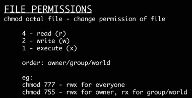

Sommaire:
- infos générales Journal de manip
- Description
- Composants Spécifiques
- Computer Vision
- Cookbook
- Culture Générale / Connaissances insolites
- DataBase
- Développement, Gestion et Commercialisation de projet
- Diagrams
- Docker
- Documentation_Automatique
- ESP8266 & ESP32
- Freecad
- GIT (versioning)
- Golang
- HPVC
- IDE & Text Editor
- Informatique
- Kicad
- LINUX
- MAC OS
- Machine Learning
- MQTT
- Musique
- Optimisation du travail (et de l’apprentissage)
- PowerShell
- PYTHON
- Regex
- Reseau
- Soudure
- Technos Web
- Trading
- URLtheque
- XML_JSON
- Arborescence du projet
Utilisateurs, Groupes et Permissions¶
Utilisateurs¶
activer l’utilisateur root¶
Avertissement
Attention il est recomander de ne pas activer le compte root.
# Cette command réinitialise le mot de passe de l'utilisateur root et l'active si nécessaire. sudo passwd root
Faire une élévation valable toute la durée de la session¶
Avertissement
Attention il est recomander de ne pas activer le compte root.
# N.B : Le prompt devrais passer en root@[nom_de_machine] sudo -s
Créer un nouvel utilisateur¶
- Liens_Web:
# sudo adduser <nom_du_nouvel_utilisateur> sudo adduser volabN.B: Lorsqu’on crée un nouvel utilisateur, un groupe du même nom est également créer.
Ajouter un utilisateur à un groupe¶
# sudo adduser <nom_de_l'utilisateur> <nom_du_groupe> sudo adduser root volabN.B: Lorsqu’on crée un nouvel utilisateur, un groupe du même nom est également créer.
Changer le mot de passe d’un utilisateur¶
# sudo passwd [username] sudo passwd root
Groupes¶
- Liens_Web:
Créer un nouveau groupe¶
# sudo addgroup <nom_du_group> sudo addgroup volab
Afficher les groupes d’un utilisateur¶
# groups <nom_d'utilisateur> groups polter # >> polter : polter adm cdrom sudo dip plugdev
Afficher les membres d’un groupe¶
# getent group <nom_du_group> getent group volab
Afficher les membres d’un groupes (commande alternantive)¶
# grep <nom_du_groupe> /etc/group grep volab /etc/group
Afficher la liste de tous les groupes¶
getent group
Afficher la liste de tous les groupes (commande alternantive)¶
cat /etc/group
Ajouter un utilisateur à un groupes¶
# sudo usermod -aG [nom_du_groupe] [nom_de_l'utilisateur] usermod -aG docker polter
ACL (Propriétaire, RWX)¶
- Liens_Web:
propriétés et permissions [3] : Explication simple sur la gestion de permissions
Connaitre tous les droits et autorisation sur des fichiers et des répertoires¶
ls -al
Changer le propriétaire d’un dossier (ownership)¶
# chown root:[nom_d'utilisateur] [nom_du_dossier]/ chown root:volab echanges/
Mettre les droits sur un dossier¶
Avertissement
Il est déconseillé de mettre les droits 777 car cela donne tous les droits à tous le monde.
{kind=link}
Pour rendre un fichier Exécutable¶
# chmod a+x [nomDuFichier]